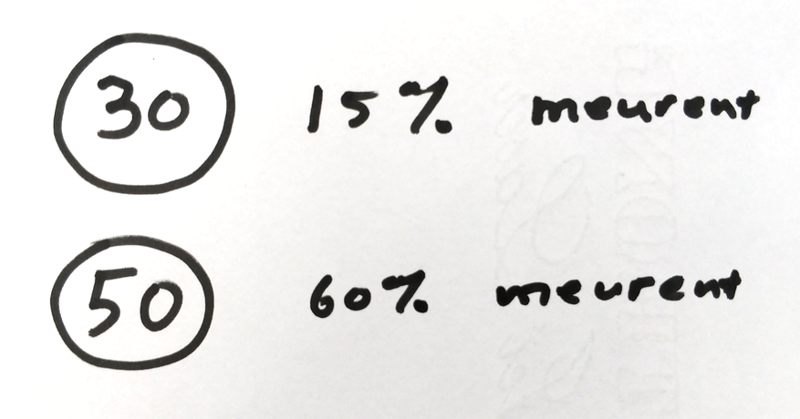

La vitesse tue des piétons, crée un sens d'insécurité, ce qui encourage l'usage de la voiture. Ce qui ajoute à nos bouchons.
Plus que nous roulons vite, plus que nous communiquons un sentiment d'insécurité aux usagers les plus fragiles. Ce qui leur incite trop souvent à se déplacer également en voiture. Et de contribuer aux bouchons.
Soutenons le passage à 30 km/h en métropole.